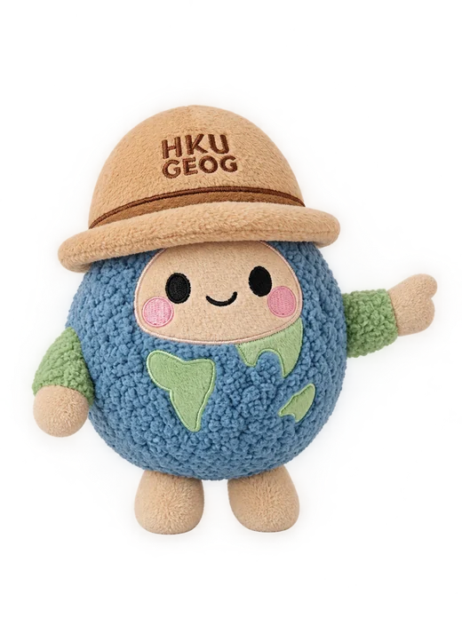

Tap a place on the map to jump into its adventure!

Coastline: Lands Department 1:50 000 topographic map (CSDI Portal) · Place locations checked on Google Maps

Turn your phone sideways
Map Quest works best in landscape.
Pick a place on the map, then run, jump and collect treasures with Geography Buddy.